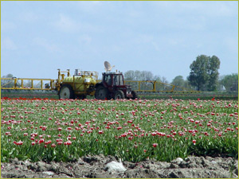

Raising labour productivity and agricultural employment
Generally speaking, in countries with lower incomes (see information on
macro-economic growth), the labour productivity in agriculture is lower
then in high income countries, mainly due to lower mechinisation. This means
that there is room for increasing labour productivity in these countries.
This generally requires an input of capital, technology and management skills.
Raising the labour productivity has however two pitfalls. It usually leads
to a reduction of the number of people working in agriculture, partly hired
farm workers or farmers themselves. Secondly, it can lead to land abandonment
in certain regions, since not all land is suitably for mechanised farming. |
 |